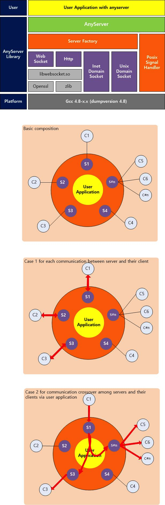

What is anyserver?
anyserver is a component library to support intercommunication between local processes and also remote.
Like websocket, http, inet domain for external communication and also unix domain server for IPC.
Architecture
- Block Diagram

- Class Diagram
How to configure
- anyserver can configure via anyserver.json that you can choose servers to launch with specific information.
- The json config file for example can deploy in build/out after make building.
- Link sample : https://github.com/tehokang/anyserver/blob/master/anyserver/src/anyserver.json
How to build
At first, there are resources like below after clone.
. ├── CMakeLists.txt ├── LICENSE ├── README.md ├── anyserver ├── anyserver_class_diagram.png ├── build (user who want to build has to make directory 'build') ├── doc ├── example └── port
- Create build directory
#mkdir build #cd build
- Build as debug
#cmake .. -Dbuild=debug - Build as release
#cmake .. -Dbuild=release - Example executable and anyserver library deploy in build/out
#cd build/out #./example anyserver.json
How to port this library
- Update (ASAP)
External Dependencies
jsoncpp 1.7.4 for codec of json
libwebsockets 2.0.0 for http and websocket server
libmicrohttpd 1.9.30-1 for backup of http
toolchain : g++ 4.8.2-19Ubuntu1
Example
#mkdir build #cd build #make #cd out #./example anyserver.json
TODO
-
HTTP and Websocket server are using same library(libwebsockets), they are sharing same context, it has to be seperated via another reference like http server of microhttpd: libwebsockets context can be multiple but it couldn't make multiple openssl context at security mode like wss, https. -
SSL test(Especially, wss) : complete to support security of only one of servers at runtime - Ready for portaility example